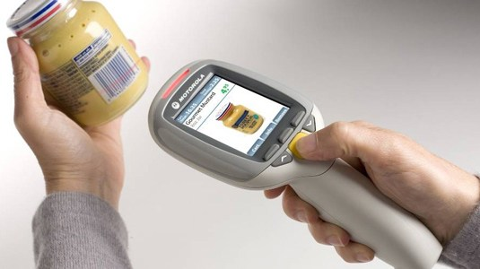
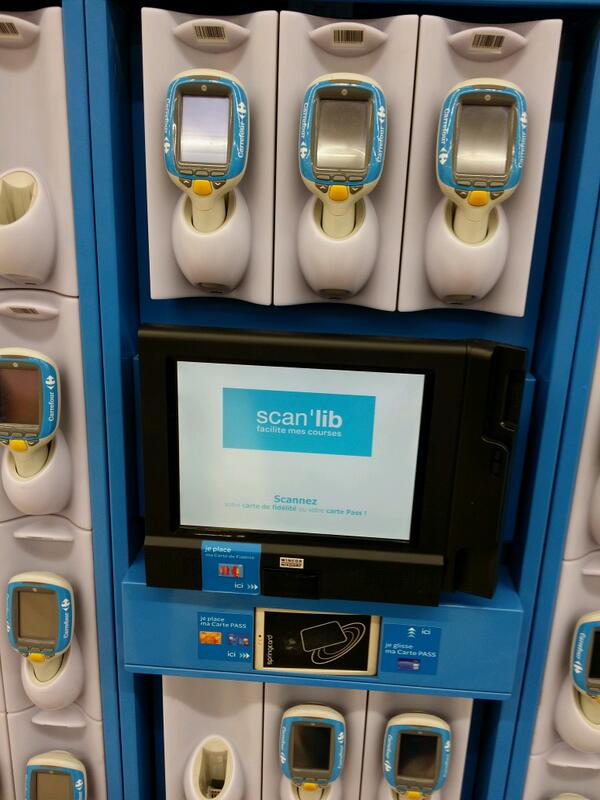
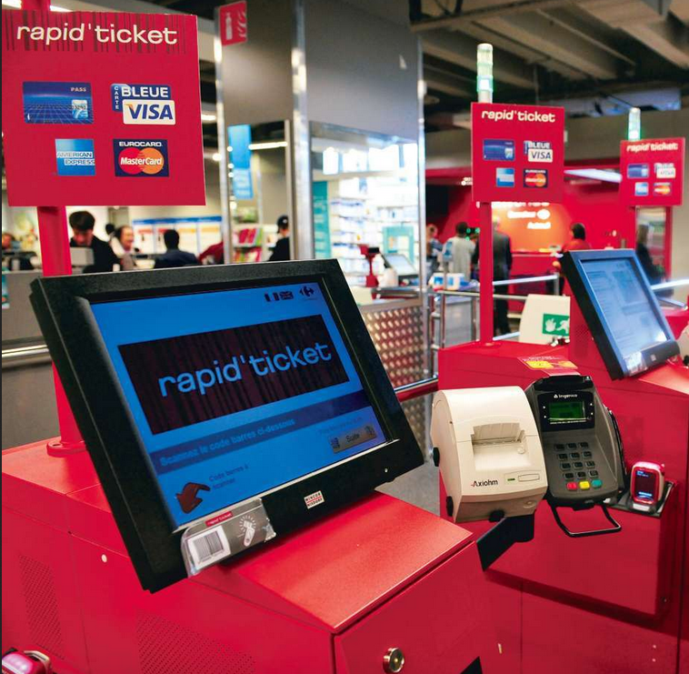

On propose d'étudier un système de scanettes qui permet aux clients des supermarchés de scanner eux-mêmes leurs achats au fur et à mesure de leur visite, et leur permet de passer dans des caisses spécialisées pour le paiement.
 Le processus est le suivant. Le client s'authentifie auprès du système de distribution des scanettes, en donnant son numéro de client, scanné via sa carte de fidélité. Si le numéro est correct, le système lui délivre alors une scannette qui est prête pour enregistrer ses achats. A chaque produit pris dans un rayon par le client, ce dernier doit systématiquement scanner le code barre, ce qui enregistre l'article dans la scannette. Celle-ci affiche toujours sur son écran de contrôle un récapitulatif des produits scannés sous forme compacte, c'est-à-dire le libellé du produit et la quantité correspondante. En cas d'erreur, il est possible de retirer des produits, en appuyant sur la touche "supprimer" et en scannant le produit à supprimer. La suppression, tout comme l'ajout, se fait donc un produit à la fois. Une fois ses courses terminées, le client se présente à une caisse de paiement automatique dédiée au traitement des scanettes.
 Pour valider le traitement les achats, le client scanne alors un code-barre spécial affiché sur la caisse. Ceci déclenche le transfert des informations à la caisse sélectionnée. Si un produit scanné n'a pas été reconnu durant les courses, l'information est retenue dans la scanette et, au moment de la validation des achats, un caissier sera sollicité pour scanner lui-même directement sur la caisse les produits non reconnus. Similairement, il est possible que les codes-barres soient sur une surface trop déformée pour être scannée. La caisse demandera donc systématiquement au client s'il a pu scanner tous ses articles. Si ce n'est pas le cas, un caissier saisira manuellement les codes-barres qui n'ont pas pu être scannés.
Aléatoirement, il est possible qu'une vérification du panier soit réalisée pour "tester" l'honnêteté du client. Un caissier est alors amené à faire la vérification. Ce dernier re-scannera alors, à l'aide de la scanette, un certain nombre de produits (maximum une douzaine) issus du caddie du client. Si cette vérification montre qu'un produit du caddie n'a pas été scanné, alors tout le caddie sera rescanné par le caissier sur une caisse dédiée, ce qui annulera la transaction en cours avec la caisse automatique. Si la vérification n'a décelé aucune erreur, le caissier scannera à nouveau le code barre de la caisse pour valider la phase de vérification.
Une fois les achats validés, le client procède au paiement. Il choisit son mode de paiement (carte bleue ou espèces) et réalise classiquement son paiement : soit il insère sa carte dans le lecteur et tape son code, soit il insère la somme en numéraire dans la caisse et celle-ci lui rendra éventuellement la monnaie, si c'est nécessaire. Une fois ce processus terminé, il peut s'en aller avec ses achats.